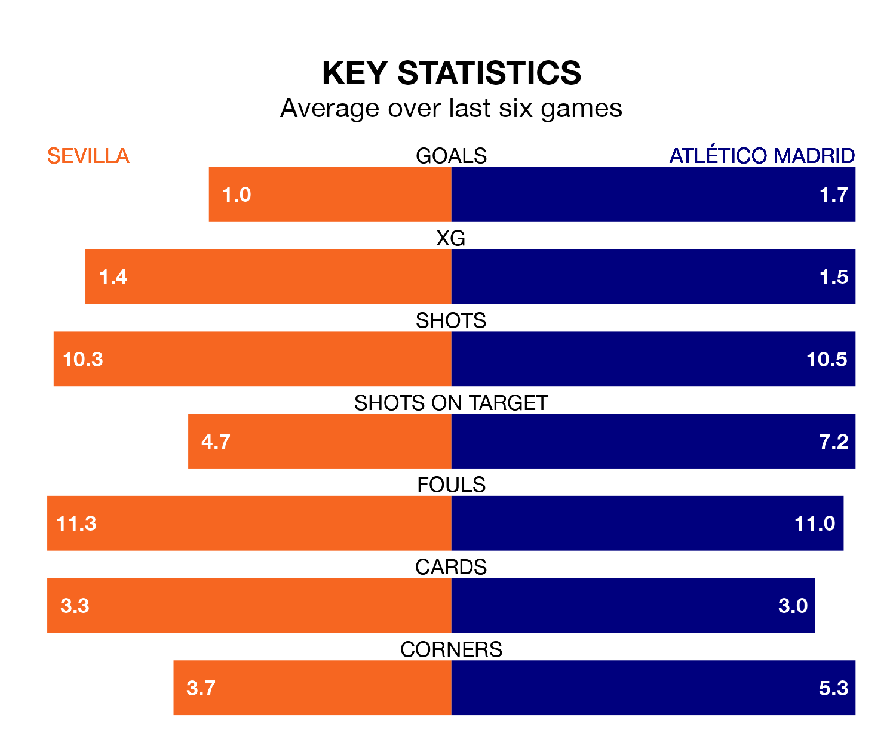

Sevilla are on a poor run ahead of hosting Atlético Madrid at the Estadio Ramón Sánchez Pizjuán on Sunday, with just four points collected from their last six games.
Sevilla have picked up one win and one draw in their last six La Liga games, and face an Atlético side whose last six games have brought four wins and one draw.
With 45 goals in 23 games so far this season, Atlético are scoring more than average in the league with 2.0 goals per game. And they are conceding fewer than average, letting in 25 goals at a rate of 1.1 per game.
Sevilla, meanwhile, are average scorers, with 1.3 goals per game. They have conceded 1.6 goals per game.
In the last 10 years, Sevilla and Atlético have played each other on 23 occasions. Sevilla won five of them, Atlético 10, and they drew eight times.
On average, Sevilla scored 0.9 goals and Atlético 1.7 in those matches.
Their last meeting was on January 25, when Atlético won 1-0 at home.
The visitors are fourth in the table after 23 games, of which they have won 15 and drawn three, earning 48 points.
The home side are 12 places behind Atlético in 16th, with four wins and eight draws putting them on 20 points.
In Alvaro Morata, Atlético have one of the league's most on-form strikers so far this season. He has notched 13 goals in 21 appearances, to sit fourth in the scoring charts.
His goal rate of one every 110 minutes is quicker than that of Youssef En-Nesyri, Sevilla's top scorer with a goal every 183 minutes, and a total of seven goals in 18 games.
Sevilla's last match was on Monday, a 2-1 win against Rayo Vallecano, with En-Nesyri getting the goals for Sevilla.
Atlético drew 1-1 with Real Madrid last time out, on Sunday, with Marcos Llorente on the scoresheet.
Updated: 10:01 (UTC), 06/02/24